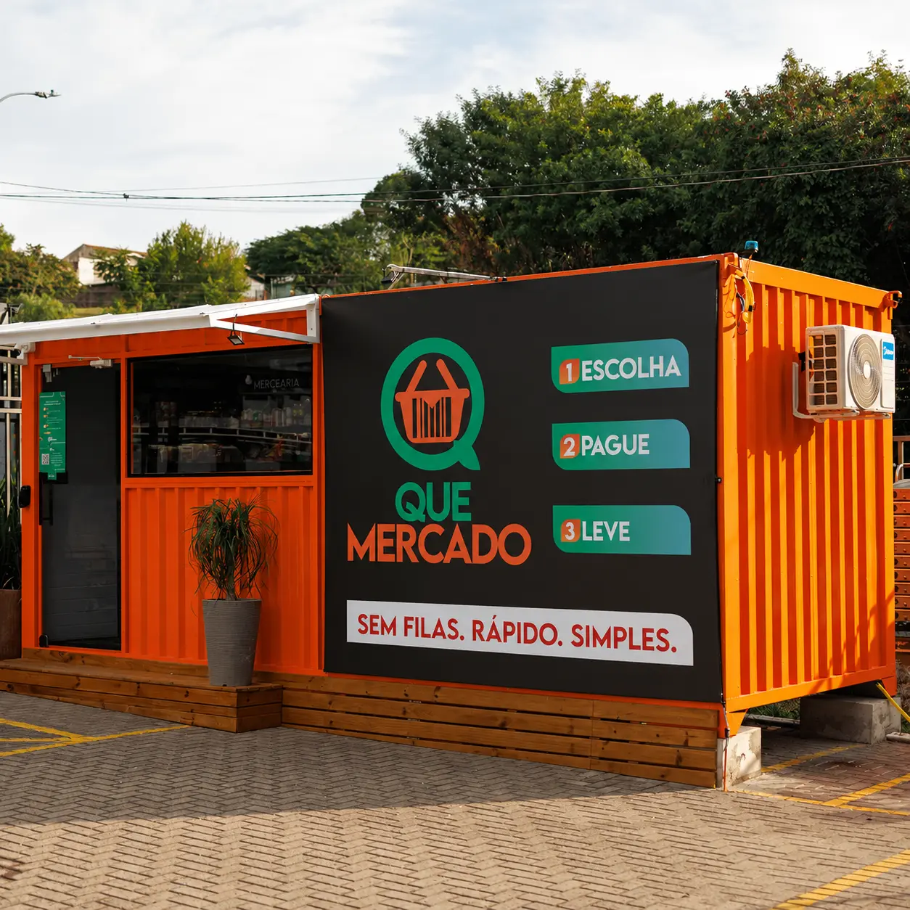
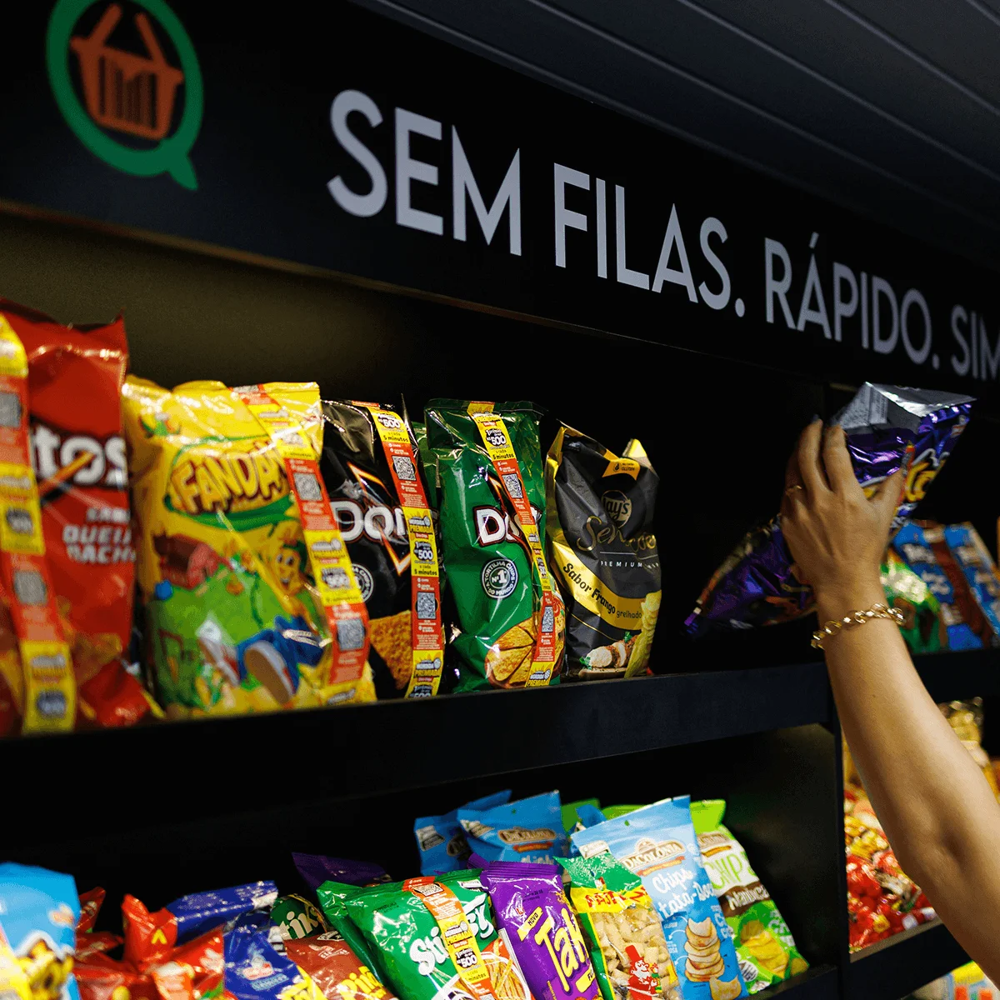
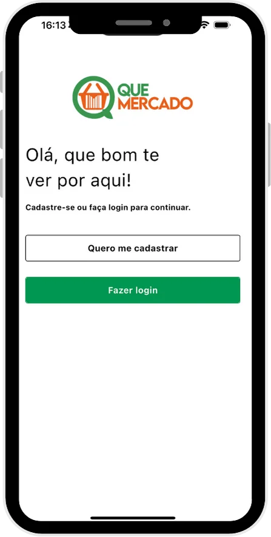
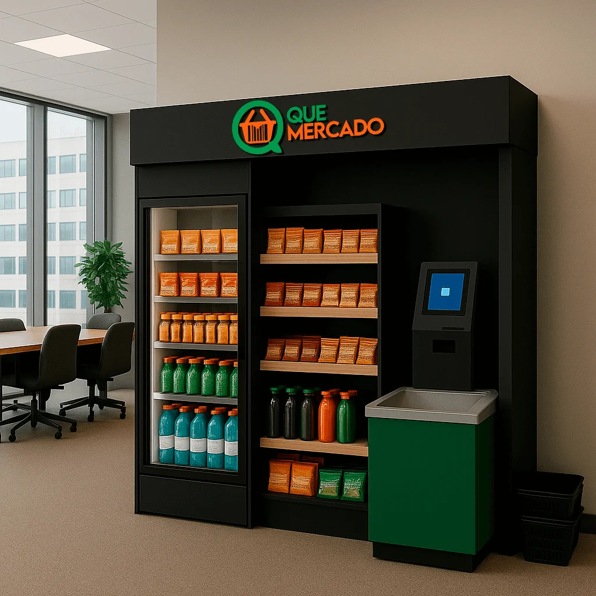

A rotina cobra presença.
- ×Montar escala de atendentes
- ×Cobrir faltas e trocas de turno
- ×Manter caixa aberto para vender
- ×Limitar a operação ao horário da equipe
- ×Ficar no ponto para saber o que está acontecendo
Uma franquia de varejo autônomo com reconhecimento facial, self-checkout, gestão remota e dados para acompanhar a operação, sem atendentes no ponto de venda.

Um mix reconhecido ajuda a transformar conveniência em hábito de compra.
O Que Mercado leva uma loja completa para dentro da rotina das pessoas: no condomínio, na empresa ou em um ponto de grande circulação. O cliente entra, pega o que precisa e paga sozinho, inclusive fora do horário comercial.
Para o franqueado, a lógica também é simples: acompanhar vendas, estoque e operação sem precisar passar o dia atrás de um balcão. O atendimento acontece pela tecnologia; a gestão continua com você.
É varejo de verdade, com produto na prateleira, giro, reposição e decisão. A diferença é que boa parte do trabalho repetitivo deixa de depender de uma pessoa parada no caixa.
O modelo conecta a experiência do cliente à gestão do franqueado: acesso, pagamento, estoque, monitoramento e tomada de decisão.


Controle de entrada e identificação do usuário conforme a configuração da unidade.
O cliente entra pelo sistema de acesso, com reconhecimento facial, app ou biometria conforme a unidade.
Seleciona os produtos do dia a dia direto nas prateleiras.
Registra os produtos no totem e paga por cartão ou Pix.
Compra concluída sem fila e sem operador de caixa.
A tecnologia substitui etapas de atendimento e caixa.
Indicadores e alertas ajudam a acompanhar a unidade à distância.
Mais informação para reposição, giro e redução de ruptura.
Implantação, treinamento, fornecedores homologados e acompanhamento.
2 modelos de negócio. 1 sistema. Uma operação adaptada ao espaço e ao perfil de consumo de cada ponto.

Uma solução de conveniência para escritórios e empresas, sem cantina tradicional e sem equipe fixa de atendimento.

Uma loja autônoma adaptada ao local de implantação, com acesso digital, self-checkout e operação sem atendente permanente.
O Que Mercado destaca um universo de mais de 200 mil condomínios no Brasil e afirma que menos de 10% contam hoje com algum modelo de mercado autônomo.
Para o franqueado, isso abre espaço para prospectar pontos com circulação recorrente e demanda por conveniência.
Quero avaliar minha regiãocondomínios no Brasil
com mercado autônomo, segundo o Que Mercado
modelos de negócio
de conveniência para o usuário
Entendemos seu perfil, objetivo e região.
Formatos, responsabilidades e estrutura comercial.
Aderência de perfil e possibilidades de implantação.
Estruturação da unidade e preparação do ponto.
Orientação para administrar a operação.
A unidade entra em funcionamento e o acompanhamento continua.
Faça um pré-cadastro rápido e converse com o time de expansão.
Artigos do blog Que Mercado sobre franquias, empresas e novos hábitos de consumo.

Entenda por que o formato ganha espaço em condomínios e como tecnologia e recorrência entram na operação.
Ler artigo ↗
Conveniência no ambiente de trabalho pode reduzir deslocamentos e tornar a rotina mais prática.
Ler artigo ↗
Por que consumidores conectados valorizam cada vez mais rapidez, autonomia e conveniência.
Ler artigo ↗O investimento depende do formato escolhido. Nesta apresentação, os modelos partem de R$ 15 mil e chegam a R$ 65 mil no formato mais completo.
A unidade não exige atendentes permanentes no ponto de venda. O franqueado continua responsável por gestão, abastecimento e organização.
Não necessariamente. O modelo inclui orientação e treinamento para a operação.
Não. A tecnologia reduz tarefas presenciais, mas o negócio continua exigindo gestão, reposição e acompanhamento.
As unidades utilizam controle de acesso, câmeras e acompanhamento remoto conforme o formato do projeto.
A expansão depende das condições comerciais e da capacidade operacional do franqueado.
Resultados variam conforme ponto, público, mix e execução. O time comercial deve apresentar cenários e referências atualizadas.
Sim. O suporte acompanha implantação, treinamento e operação conforme as condições da franquia.
Converse com o time de expansão e descubra se o Que Mercado faz sentido para o seu perfil e região.